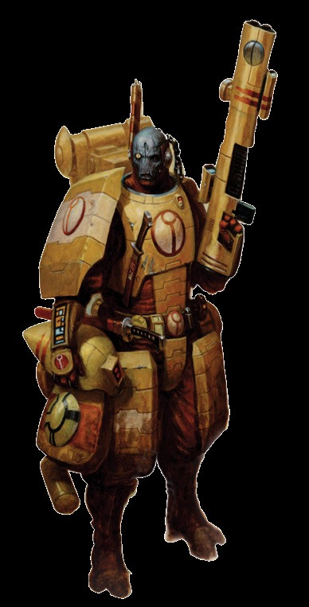

钛族探索者开始游戏时都具有以下特质。
钛族人重视团队超过了重视自我，并进一步相信他们的战友和指挥官总是会选择最好的行动方针。这使每个钛族人都能毫不犹豫或怀疑地服从命令。
每次遭遇只能使用一次，钛族探险者在直接执行另一个钛族角色的命令时进行的检定可以获得+10的奖励。此外，如果该命令将会使探索者被置于极大的危险中以使整个团队受益，则该奖励将增加到+30（由GM自行决定）。
这个角色不是在人类中长大的，并且对帝国的文化和历史知之甚少。人类的法律、传统、宗教和迷信对于具有这种特质的角色来说是不熟悉和陌生的。
该角色在所有与人类帝国相关的普通知识、禁忌知识和学术知识检定中都会受到-10的惩罚。
这种生物是异形物种的一员，被人们以恐惧和厌恶的混合方式看待，并且在形式和思想上都和人类非常不同，以至于任何形式的社会互动都成为了更大的挑战。
该生物在与人类打交道时在所有基于社交的检定中都会受到-20的惩罚，并且对人类造成相同的惩罚。这些惩罚在与熟悉他的人打交道时不适用。最后，人类船只上任何异形的存在都会让船员感到不安。一名或多名异形探索者在人类飞船上的持续存在会使这条船上的船员士气降低2。
前置条件：无
与野蛮的近战相比，钛星人更喜欢远程战斗，并寻求在敌人进入近距离战斗之前将其击倒。
每当敌人进行了一个冲锋动作以试图与20米范围内的钛族友方角色进行近战时，这位探险家可以花费他的反应来对他的敌人进行一次受到-20惩罚的标准远程攻击。此攻击在目标完成其冲锋动作之前结算。
前置条件：冲刺，学术知识（钛帝国）
与钛帝国遇到的许多其他种族不同，钛族人认为从无望的境地中撤退，以节省力量以待更好的时机并不是一种错误。
每次遭遇只能发动一次，作为一个部分行动，探索者可以进行一次挑战难度的+0学术知识（钛帝国）检定。如果他成功了，他和20米内的其他钛族盟友可以立即以自由动作执行一次脱战动作。
前置条件：学术知识（钛帝国），科技使用+10
创新和研究奇怪的新技术是钛星人的第二天性，而在科罗努斯扩区，确实存在许多技术奥秘。这个角色试图利用每一个机会将敌人的武器转为上上善道服务。
当使用一把他缺乏远程武器训练、近战武器训练或异种武器训练天赋的武器时，该角色可以消耗一个部分动作进行一次挑战性的(+0)科技使用检定。如果他成功了，他可以在一轮内不受惩罚地操作武器（就像他有适当的天赋一样），再加上他在检定中获得的每级成功度一轮的额外轮次。
前置条件：学术知识（钛帝国）+10，科技使用+20
钛族人从他们不断适应的技术中汲取了他们大部分的军事力量，并利用改进和创新在战场上获得优势。
每场游戏一次。该角色可以通过进行一次困难的(-20)科技使用检定来增强一项技术。如果他成功了，他会永久性地将物品的工艺从差到普通，从普通到好，或从好到最好。根据GM的判断，升级过程所需的时间因物品而异（显然，修改等离子手枪耗费的时间比完全重新设计等离子驱动器要少得多）。
前置条件：弹道技能45，狂怒齐射，指挥+20
一名明智的钛族指挥官知道将所有可用火力集中在单个高价值目标上的价值，并且能够看破如何通过集中齐射颇具策略地撕裂即使是大规模的敌人。
拥有该天赋的探索者可以花费一个命运点数并以一个完整动作进行一次挑战难度的+0弹道技能检定。如果他成功了，他会选择范围内的一个单个目标：该目标将被标记一轮，并加上他在检定中获得的每级成功度一轮的额外轮次。只要目标还被标记着，用远程攻击击中目标的友军钛族角色可以投掷两次伤害，取较高的结果。
“你的训练会很严酷。它将持续一生。它将严谨、细致、包罗万象。你将学习那些关于火氏族产生过的最伟大思想的课程，并且还有如何以及何时使用它们。所有这一切都是为了让你可以为上上善道而战，并可能在此过程中死去，但这将是一次你会愿意着手开始的尝试。而你将不会孤单。你们将一起冲入战场，你们也将一起死去。但你将从此终生成为火战士。”
――暗袭指挥官在塔'利萨拉仪式前对新学员的讲话
火氏族是钛帝国的军事氏族，通过灵活的战术和先进的武器来发起战争。那些出生在火氏族的人只有一种命运：以上上善道的名义成为战士，并毕生致力于磨练他们的军事技能这个唯一的目标。
火战士通常只会在同类中一起长大，而他们年轻的经历也没有什么不同。他们的童年团体，如果这个词可以用来形容如此严格的军国主义青年的话，通常会继续服役，要么作为正式的联合小队(La'rua)，要么在同一个猎核(ui)中服役。火氏族的军事结构与其他物种并没有太大的不同。小队由基本的战士组成，称为夏斯'拉，由名为夏斯'钨的小队长负责领导。那些特别成功的老兵将获得夏斯'维的称号，并被允许驾驶那被引以为豪的战斗服。
被授予了自己的指挥权的火战士被称为夏斯'艾尔，而最高级别的指挥官则会有着夏斯'欧的沉重敬称。虽然各个团队很少改变他们的组成人员，除非遭受了损失和伤亡，但猎核的理念却非常灵活，其组成会根据战场和整个战争的需要而变化。火战士小队会始终构成猎核的核心，但可以从寻路者、危机战斗服小队、克鲁特辅助军、兵蜂小队以及例如锤头鲨坦克之类的各种载具中获得支持。虽然地面载具通常使用火氏族驾驶员，但在空中和宇宙中的优势则来自气氏族的友军。
在无休止的火战士训练期间，个人表现出的特殊优势或技能会被特别关注。那些表现出指挥潜力的人将经常接受火焰试炼。那些特别敏捷的人经常在寻路者训练中找到自己的道途，而那些有机械亲和力的人可能会被指定为兵蜂操作员。
钛族的战争机器竭力不滥用其拥有的资源，并力求最大限度地发挥士兵的天赋。钛族战争学说视机动性和战术灵活性高于一切。在他们经历的许许多多的战役中，钛族人了解到了他们在战斗方面有着某些弱点，其在近战中尤为明显。因此他们试图通过各种方式来解决这些缺陷，例如额外的克鲁特人和胡蜂人辅助军，但他们的主要应对方案在于绝不让敌人拉近距离。他们要么通过压倒性的火力，要么通过魔鬼鱼或梭鱼运输机进行快速转移来实现这一目标。
从技术上讲，他们在多年来已经发展了许多战术理念，而新的创新性理念也随着钛族人遇到新的种族和战斗方式而被编写出来，但是，两种古老的战术仍然强烈的影响着火战士。空育，或称之为耐心猎手的艺术，要求使用单个单位将毫无戒心的敌人引诱到精心布置的陷阱中。这样的伏击往往有多层，让敌人在每次意想不到的反击后都晕头转向。蒙特卡，或称之为致命一击的艺术，围绕着仔细识别一个关键目标，然后以压倒性的力量精确攻击它。
起始技能：基础知识（钛帝国）、闪避、逻辑、读写能力、口语（钛帝国）、科技使用
起始天赋：火氏族武器训练，狙击手，快速装弹，援护火力，不屈信念。
起始特质：能力分类。为了上上善道，非帝国人，不要对异形说话。
起始装备：优质工艺的脉冲步枪或优质工艺的脉冲卡宾枪、极品工艺的脉冲手枪、3枚钛族光子手榴弹、内置通讯微珠的钛族战斗盔甲、翻译单元和黑阳滤镜。

| 属性点 | 青涩 | 受训 | 中级 | 专家 |
|---|---|---|---|---|
| 武器技能 | 500 | 750 | 1000 | 2500 |
| 弹道技能 | 100 | 250 | 500 | 750 |
| 力量 | 500 | 750 | 1000 | 2500 |
| 坚韧 | 250 | 500 | 750 | 1000 |
| 敏捷 | 250 | 500 | 750 | 1000 |
| 智力 | 100 | 250 | 500 | 750 |
| 感知 | 100 | 250 | 500 | 750 |
| 意志 | 250 | 500 | 750 | 1000 |
| 社交 | 250 | 500 | 750 | 1000 |
以这种方式，许多上上善道的敌人突然发现自己已然陷入困境，他们的领袖被歼灭，而钛族人甚至在剩下的敌人组织防御之前就撤退了。火战士们会预期在战争中使用多种策略，以始终适应当前的战斗形势的流向，但也有许多指挥官更倾向于某些特定的策略而不是其他策略，并在通常情况下尽可能地使用它们。
一个发现自己加入行商浪人队伍的火战士可能会体验到一种全新的自由感。远离作为火战士的生活中的那些无休止的训练和战斗。他将寻求战术性的分析情况，而不是一头扎进战场，并且通常更喜欢尽可能在最大交战距离上交战。尽管他为此接受训练，但火战士意识到战斗并不总是首选甚至优先的选择，并且很乐意站在一边，让队伍里的水氏交涉者们去完成他们的工作。在战斗中，尽管在必要时并不畏惧撤退，但如果情况或他的指挥官需要，火战士会战斗到最后一刻，并很乐意牺牲自己。正因这样的行为方式，使得上上善道总是繁荣昌盛。
| 提升 | 花费 | 类型 | 前置条件 |
|---|---|---|---|
| 警觉 | 100 | 技能 | |
| 密语 | 100 | 技能 | |
| 基础知识（战争） | 100 | 技能 | |
| 读写能力+10 | 100 | 技能 | 读写能力 |
| 学术知识（钛帝国） | 100 | 技能 | |
| 口语（克鲁特语） | 100 | 技能 | |
| 口语（低哥特语） | 100 | 技能 | |
| 魅力 | 200 | 技能 | |
| 指挥 | 200 | 技能 | |
| 掩藏 | 200 | 技能 | |
| 驾驶（掠行器） | 200 | 技能 | |
| 逻辑+10 | 200 | 技能 | 逻辑 |
| 医护 | 200 | 技能 | |
| 导航（地表） | 200 | 技能 | |
| 静默行动 | 200 | 技能 | |
| 科技使用+10 | 300 | 技能 | 科技使用 |
| 全新盟友 | 300 | 天赋 | 社交30 |
| 钢铁神经 | 300 | 天赋 | |
| 冲刺 | 300 | 天赋 | |
| 双巧手 | 500 | 天赋 | |
| 近战武器训练（原始） | 500 | 天赋 | |
| 团结之刃仪式 | 500 | 天赋 | 意志35 |
| 提升 | 花费 | 类型 | 前置条件 |
|---|---|---|---|
| 基础知识（钛帝国）+10 | 100 | 技能 | 基础知识（钛帝国） |
| 读写能力+20 | 100 | 技能 | 读写能力+10 |
| 学术知识（钛帝国）+10 | 100 | 技能 | 学术知识（钛帝国） |
| 洞察 | 100 | 技能 | |
| 游泳 | 100 | 技能 | |
| 指挥+10 | 200 | 技能 | 指挥 |
| 欺诈 | 200 | 技能 | |
| 驾驶（掠行器）+10 | 200 | 技能 | 驾驶（掠行器） |
| 恐吓 | 200 | 技能 | |
| 探询 | 200 | 技能 | |
| 逻辑+20 | 200 | 技能 | 逻辑+10 |
| 导航（群星） | 200 | 技能 | |
| 死眼神射 | 200 | 天赋 | 弹道技能30 |
| 难以瞄准 | 200 | 天赋 | 敏捷40 |
| 冥想 | 200 | 天赋 | |
| 快速反应 | 200 | 天赋 | 敏捷40 |
| 皮糙肉厚 | 200 | 天赋 | |
| 技术洞察 | 300 | 天赋 | 学术知识（钛帝国），科技使用+10 |
| 喷火武器训练（通用） | 500 | 天赋 | |
| 重型武器训练（择一） | 500 | 天赋 | |
| 近战武器训练（通用） | 500 | 天赋 | |
| 卓越供应链 | 500 | 天赋 |
| 提升 | 花费 | 类型 | 前置条件 |
|---|---|---|---|
| 基础知识（战争）+10 | 100 | 技能 | 基础知识（战争） |
| 基础知识（钛帝国）+20 | 100 | 技能 | 基础知识（钛帝国）+10 |
| 学术知识（钛帝国）+20 | 100 | 技能 | 学术知识（钛帝国）+10 |
| 警觉+10 | 200 | 技能 | 警觉 |
| 驾驶（掠行器）+10 | 200 | 技能 | 驾驶（掠行器） |
| 医护+10 | 200 | 技能 | 医护 |
| 魅力+10 | 300 | 技能 | 魅力 |
| 爆破 | 300 | 技能 | |
| 飞控（飞行器） | 300 | 技能 | |
| 求生 | 300 | 技能 | |
| 追踪 | 300 | 技能 | |
| 气势威严 | 300 | 天赋 | 社交30 |
| 致命射击 | 300 | 天赋 | 弹道技能40 |
| 双人战队 | 300 | 天赋 | |
| 深思熟虑 | 300 | 天赋 | 智力30 |
| 火力支援 | 400 | 天赋 | 弹道技能40，社交35 |
| 重型武器训练（择一） | 500 | 天赋 | |
| 胯射 | 500 | 天赋 | 弹道技能40，敏捷40 |
| 知识填鸭 | 500 | 天赋 | 智力40 |
| 科技大师 | 500 | 天赋 | 学术知识（钛帝国），基础知识（战争） |
| 多语言使用者 | 500 | 天赋 | 智力30，社交30 |
| 双持客 | 500 | 天赋 | 武器技能35或弹道技能35，敏捷35 |
| 提升 | 花费 | 类型 | 前置条件 |
|---|---|---|---|
| 读写能力+20 | 100 | 技能 | 读写能力+10 |
| 洞察+10 | 100 | 技能 | 洞察 |
| 平等待遇（克鲁特人或其他钛帝国物种） | 100 | 天赋 | 社交30 |
| 指挥+20 | 200 | 技能 | 指挥+10 |
| 欺诈+10 | 200 | 技能 | 欺诈 |
| 导航（地表）+10 | 200 | 技能 | 导航（地表） |
| 导航（群星）+10 | 200 | 技能 | 导航（群星） |
| 飞控（飞行器）+10 | 200 | 技能 | 飞控（飞行器） |
| 科技使用+20 | 200 | 技能 | 科技使用+10 |
| 追踪+10 | 200 | 技能 | 追踪 |
| 盲斗 | 200 | 天赋 | 感知30 |
| 皮糙肉厚 | 200 | 天赋 | 意志40 |
| 傲慢护甲 | 300 | 天赋 | |
| 无所畏惧 | 300 | 天赋 | |
| 飞控（个人） | 500 | 技能 | |
| 上上善道的使者 | 500 | 天赋 | 社交45，魅力+10 |
| 狂怒齐射 | 500 | 天赋 | 弹道技能40，致命射击 |
| 守护者 | 500 | 天赋 | 敏捷40 |
| 强力射击 | 500 | 天赋 | 弹道技能40 |
| 战术灵活性 | 500 | 天赋 | 冲刺，学术知识（钛帝国）+10 |
| 提升 | 花费 | 类型 | 前置条件 |
|---|---|---|---|
| 轻身坠 | 100 | 天赋 | 敏捷30 |
| 鲤鱼打挺 | 100 | 天赋 | 敏捷30 |
| 魅力+20 | 200 | 技能 | 魅力+10 |
| 掩藏+10 | 200 | 技能 | 掩藏 |
| 静默行动+20 | 200 | 技能 | 静默行动+10 |
| 求生+10 | 200 | 技能 | 求生 |
| 游泳+10 | 200 | 技能 | 游泳 |
| 爆破+10 | 300 | 技能 | 爆破 |
| 闪避+20 | 300 | 技能 | 闪避+10 |
| 恐吓+10 | 300 | 技能 | 恐吓 |
| 医护+20 | 300 | 技能 | 医护+10 |
| 飞控（飞行器）+20 | 300 | 技能 | 飞控（飞行器）+10 |
| 跟踪 | 300 | 技能 | 敏捷40 |
| 命硬 | 300 | 天赋 | 弹道技能40，死眼神射 |
| 快速反应 | 300 | 天赋 | 智力30 |
| 神射手 | 300 | 天赋 | |
| 一敲就好 | 400 | 天赋 | 团结之刃仪式 |
| 空育门徒 | 500 | 天赋 | 敏捷40，双持客 |
| 双重射击 | 500 | 天赋 | 团结之刃仪式，指挥+10 |
| 无私典范 | 500 | 天赋 | |
| 异种武器训练（择一） | 500 | 天赋 | |
| 才华横溢（驾驶） | 500 | 天赋 | |
| 撂倒 | 750 | 天赋 |